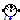
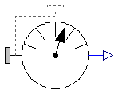
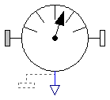
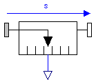
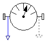
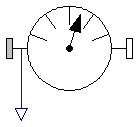

Package Sensors contains ideal measurement components to determine absolute and relative kinematic quantities, as well as cut-forces and cut-torques. All measured quantities can be provided in every desired coordinate system.
| Model | Description |
|---|---|
| AbsoluteSensor | Measure absolute kinematic quantities of a frame connector |
| RelativeSensor | Measure relative kinematic quantities between two frame connectors |
| Distance | Measure distance between the origins of two frame connectors |
| CutForce | Measure cut force vector |
| CutTorque | Measure cut torque vector |
| CutForceAndTorque | Measure cut force and cut torque vector |
| Power | Measure power flowing from frame_a to frame_b |
| Name | Description |
|---|---|
| AbsoluteSensor | Measure absolute kinematic quantities of a frame connector |
|  RelativeSensor | Measure relative kinematic quantities between two frame connectors |
| Measure the distance between the origins of two frame connectors | |
| Measure cut force vector | |
| Measure cut torque vector | |
| Measure cut force and cut torque vector | |
| Power | Measure power flowing from frame_a to frame_b |

Absolute kinematic quantities of frame_a are computed and provided at the output signal connector y in packed format in the order
For example, if parameters get_v and get_w are true and all other get_XXX parameters are false, then y contains 6 elements:
y[1:3] = absolute velocity y[4:6] = absolute angular velocity
In the following figure the animation of an AbsoluteSensor component is shown. The light blue coordinate system is frame_a and the yellow arrow is the animated sensor.
If frame_resolve is connected to another frame, then the provided absolute kinematic vectors are resolved in this frame. If frame_resolve is not connected then the coordinate system in which the relative quantities are resolved is defined by parameter resolveInFrame_a. If this parameter is true, then the provided kinematic vectors are resolved in frame_a of this component. Otherwise, the kinematic vectors are resolved in the world frame. For example, if frame_resolve is not connected and if resolveInFrame_a = false, and get_v = true, then
y = der(frame_a.r) // resolved in world frame
is returned, i.e., the derivative of the distance frame_a.r_0 from the origin of the world frame to the origin of frame_a, resolved in the world frame.
Note, the cut-force and the cut-torque in frame_resolve are always zero, whether frame_resolve is connected or not.
If get_angles = true, the 3 angles to rotate the world frame into frame_a along the axes defined by parameter sequence are returned. For example, if sequence = {3,1,2} then the world frame is rotated around angles[1] along the z-axis, afterwards it is rotated around angles[2] along the x-axis, and finally it is rotated around angles[3] along the y-axis and is then identical to frame_a. The 3 angles are returned in the range
-p <= angles[i] <= p
There are two solutions for "angles[1]" in this range. Via parameter guessAngle1 (default = 0) the returned solution is selected such that |angles[1] - guessAngle1| is minimal. The transformation matrix between the world frame and frame_a may be in a singular configuration with respect to "sequence", i.e., there is an infinite number of angle values leading to the same transformation matrix. In this case, the returned solution is selected by setting angles[1] = guessAngle1. Then angles[2] and angles[3] can be uniquely determined in the above range.
Note, that parameter sequence has the restriction that only values 1,2,3 can be used and that sequence[1] ≠ sequence[2] and sequence[2] ≠ sequence[3]. Often used values are:
sequence = {1,2,3} // Cardan angle sequence
= {3,1,3} // Euler angle sequence
= {3,2,1} // Tait-Bryan angle sequence
Exact definition of the returned quantities:
| frame_resolve is | resolveInFrame_a = | vector is resolved in |
|---|---|---|
| connected | true | frame_resolve |
| connected | false | frame_resolve |
| not connected | true | frame_a |
| not connected | false | world frame |
| Type | Name | Default | Description |
|---|---|---|---|
| Integer | n_out | 3*((if get_r_abs then 1 else... | Number of output signals |
| Boolean | animation | true | = true, if animation shall be enabled (show arrow) |
| Boolean | resolveInFrame_a | false | = true, if vectors are resolved in frame_a, otherwise in the world frame (if connector frame_resolve is connected, vectors are resolved in frame_resolve) |
| Boolean | get_r_abs | true | = true, to measure the position vector from the origin of the world frame to the origin of frame_a in [m] |
| Boolean | get_v_abs | false | = true, to measure the absolute velocity of the origin of frame_a in [m/s] |
| Boolean | get_a_abs | false | = true, to measure the absolute acceleration of the origin of frame_a in [m/s^2] |
| Boolean | get_angles | false | = true, to measure the 3 rotation angles to rotate the world frame into frame_a along the axes defined in 'sequence' below in [rad] |
| Boolean | get_w_abs | false | = true, to measure the absolute angular velocity of frame_a in [rad/s] |
| Boolean | get_z_abs | false | = true, to measure the absolute angular acceleration to frame_a in [rad/s^2] |
| if get_angles = true | |||
| RotationSequence | sequence | {1,2,3} | Angles are returned to rotate world frame around axes sequence[1], sequence[2] and finally sequence[3] into frame_a |
| Angle | guessAngle1 | 0 | Select angles[1] such that abs(angles[1] - guessAngle1) is a minimum [rad] |
| Animation | |||
| if animation = true | |||
| Diameter | arrowDiameter | world.defaultArrowDiameter | Diameter of arrow from world frame to frame_a [m] |
| Color | arrowColor | Modelica.Mechanics.MultiBody... | Color of arrow from world frame to frame_a |
| SpecularCoefficient | specularCoefficient | world.defaultSpecularCoeffic... | Reflection of ambient light (= 0: light is completely absorbed) |
| Type | Name | Description |
|---|---|---|
| Frame_a | frame_a | Coordinate system from which absolute quantities are provided as output signals |
| output RealOutput | y[n_out] | Measured data as signal vector |
| Frame_resolve | frame_resolve | If connected, the output signals are resolved in this frame |
model AbsoluteSensor
"Measure absolute kinematic quantities of a frame connector"
import SI = Modelica.SIunits;
import Modelica.Mechanics.MultiBody.Frames;
import Modelica.Mechanics.MultiBody.Types;
extends Interfaces.PartialAbsoluteSensor(n_out=3*((if get_r_abs then 1 else
0) + (if get_v_abs then 1 else 0) + (if get_a_abs then 1 else
0) + (if get_angles then 1 else 0) + (if get_w_abs then 1 else
0) + (if get_z_abs then 1 else 0)));
Interfaces.Frame_resolve frame_resolve
"If connected, the output signals are resolved in this frame";
parameter Boolean animation=true
"= true, if animation shall be enabled (show arrow)";
parameter Boolean resolveInFrame_a=false
"= true, if vectors are resolved in frame_a, otherwise in the world frame (if connector frame_resolve is connected, vectors are resolved in frame_resolve)";
parameter Boolean get_r_abs=true
"= true, to measure the position vector from the origin of the world frame to the origin of frame_a in [m]";
parameter Boolean get_v_abs=false
"= true, to measure the absolute velocity of the origin of frame_a in [m/s]";
parameter Boolean get_a_abs=false
"= true, to measure the absolute acceleration of the origin of frame_a in [m/s^2]";
parameter Boolean get_angles=false
"= true, to measure the 3 rotation angles to rotate the world frame into frame_a along the axes defined in 'sequence' below in [rad]";
parameter Boolean get_w_abs=false
"= true, to measure the absolute angular velocity of frame_a in [rad/s]";
parameter Boolean get_z_abs=false
"= true, to measure the absolute angular acceleration to frame_a in [rad/s^2]";
parameter Types.RotationSequence sequence(
min={1,1,1},
max={3,3,3}) = {1,2,3}
" Angles are returned to rotate world frame around axes sequence[1], sequence[2] and finally sequence[3] into frame_a";
parameter SI.Angle guessAngle1=0
" Select angles[1] such that abs(angles[1] - guessAngle1) is a minimum";
input SI.Diameter arrowDiameter=world.defaultArrowDiameter
" Diameter of arrow from world frame to frame_a";
input Types.Color arrowColor=Modelica.Mechanics.MultiBody.Types.Defaults.SensorColor
" Color of arrow from world frame to frame_a";
input Types.SpecularCoefficient specularCoefficient = world.defaultSpecularCoefficient
"Reflection of ambient light (= 0: light is completely absorbed)";
protected
SI.Position r_abs[3]
"Dummy or position vector from origin of the world frame to origin of frame_a (resolved in frame_resolve, frame_a or world frame)";
SI.Velocity v_abs[3]
"Dummy or velocity of origin of frame_a with respect to origin of world frame (resolved in frame_resolve, frame_a or world frame)";
SI.Acceleration a_abs[3]
"Dummy or acceleration of origin of frame_a with respect to origin of word frame (resolved in frame_resolve, frame_a or world frame)";
SI.Angle angles[3]
"Dummy or angles to rotate world frame into frame_a via 'sequence'";
SI.AngularVelocity w_abs[3]
"Dummy or angular velocity of frame_a with respect to world frame (resolved in frame_resolve, frame_a or world frame)";
SI.AngularAcceleration z_abs[3]
"Dummy or angular acceleration of frame_a with respect to world frame (resolved in frame_resolve, frame_a or world frame)";
SI.Velocity v_abs_0[3]
"Dummy or absolute velocity of origin of frame_a resolved in world frame";
SI.AngularVelocity w_abs_0[3]
"Dummy or absolute angular velocity of frame_a resolved in world frame";
parameter Integer i1=1;
parameter Integer i2=if get_r_abs then i1 + 3 else i1;
parameter Integer i3=if get_v_abs then i2 + 3 else i2;
parameter Integer i4=if get_a_abs then i3 + 3 else i3;
parameter Integer i5=if get_angles then i4 + 3 else i4;
parameter Integer i6=if get_w_abs then i5 + 3 else i5;
Modelica.Mechanics.MultiBody.Visualizers.Advanced.Arrow arrow(
r_head=frame_a.r_0,
diameter=arrowDiameter,
specularCoefficient=specularCoefficient,
color=arrowColor) if world.enableAnimation and animation;
equation
if get_angles then
angles = Frames.axesRotationsAngles(frame_a.R, sequence, guessAngle1);
else
angles = zeros(3);
end if;
if cardinality(frame_resolve) == 1 then
// frame_resolve is connected
frame_resolve.f = zeros(3);
frame_resolve.t = zeros(3);
if get_r_abs then
r_abs = Frames.resolve2(frame_resolve.R, frame_a.r_0);
else
r_abs = zeros(3);
end if;
if get_v_abs or get_a_abs then
v_abs_0 = der(frame_a.r_0);
v_abs = Frames.resolve2(frame_resolve.R, v_abs_0);
else
v_abs_0 = zeros(3);
v_abs = zeros(3);
end if;
if get_a_abs then
a_abs = Frames.resolve2(frame_resolve.R, der(v_abs_0));
else
a_abs = zeros(3);
end if;
if get_w_abs or get_z_abs then
w_abs_0 = Modelica.Mechanics.MultiBody.Frames.angularVelocity1(frame_a.R);
w_abs = Frames.resolve2(frame_resolve.R, w_abs_0);
else
w_abs_0 = zeros(3);
w_abs = zeros(3);
end if;
if get_z_abs then
z_abs = Frames.resolve2(frame_resolve.R, der(w_abs_0));
else
z_abs = zeros(3);
end if;
else
// frame_resolve is NOT connected
frame_resolve.r_0 = zeros(3);
frame_resolve.R = Frames.nullRotation();
if get_r_abs then
if resolveInFrame_a then
r_abs = Modelica.Mechanics.MultiBody.Frames.resolve2(frame_a.R, frame_a.r_0);
else
r_abs = frame_a.r_0;
end if;
else
r_abs = zeros(3);
end if;
if get_v_abs or get_a_abs then
v_abs_0 = der(frame_a.r_0);
if resolveInFrame_a then
v_abs = Modelica.Mechanics.MultiBody.Frames.resolve2(frame_a.R, v_abs_0);
else
v_abs = v_abs_0;
end if;
else
v_abs_0 = zeros(3);
v_abs = zeros(3);
end if;
if get_a_abs then
if resolveInFrame_a then
a_abs = Modelica.Mechanics.MultiBody.Frames.resolve2(frame_a.R, der(v_abs_0));
else
a_abs = der(v_abs_0);
end if;
else
a_abs = zeros(3);
end if;
w_abs_0 = zeros(3);
if get_w_abs or get_z_abs then
if resolveInFrame_a then
w_abs = Modelica.Mechanics.MultiBody.Frames.angularVelocity2(frame_a.R);
else
w_abs = Modelica.Mechanics.MultiBody.Frames.angularVelocity1(frame_a.R);
end if;
else
w_abs = zeros(3);
end if;
if get_z_abs then
/* if w_abs and z_abs are resolved in the world frame, we have
z_abs = der(w_abs)
if w_abs and z_abs are resolved in frame_a, we have
z_abs = R*der(transpose(R)*w_abs)
= R*(der(transpose(R))*w_abs + transpose(R)*der(w_abs)))
= R*(transpose(R)*R*der(transpose(R))*w_abs + transpose(R)*der(w_abs)))
= skew(w_abs)*w_abs + der(w_abs)
= der(w_abs) // since cross(w_abs, w_abs) = 0
*/
z_abs = der(w_abs);
else
z_abs = zeros(3);
end if;
end if;
frame_a.f = zeros(3);
frame_a.t = zeros(3);
if get_r_abs then
y[i1:i1 + 2] = r_abs;
end if;
if get_v_abs then
y[i2:i2 + 2] = v_abs;
end if;
if get_a_abs then
y[i3:i3 + 2] = a_abs;
end if;
if get_angles then
y[i4:i4 + 2] = angles;
end if;
if get_w_abs then
y[i5:i5 + 2] = w_abs;
end if;
if get_z_abs then
y[i6:i6 + 2] = z_abs;
end if;
end AbsoluteSensor;

Relative kinematic quantities between frame_a and frame_b are determined and provided at the output signal connector y in packed format in the order
For example, if parameters get_v_rel and get_w_rel are true and all other get_XXX parameters are false, then y contains 6 elements:
y = relative velocity y = relative angular velocity
In the following figure the animation of a RelativeSensor component is shown. The light blue coordinate system is frame_a, the dark blue coordinate system is frame_b, and the yellow arrow is the animated sensor.
If parameter resolveInFrame_a = true, then the provided relative kinematic vectors of frame_b with respect to frame_a are resolved before differentiation in frame_a. If this parameter is false, the relative kinematic vectors are resolved before differentiation in frame_b. If frame_resolve is connected to another frame, then the kinematic vector as defined above and/or its required derivatives are resolved in frame_resolve. Note, derivatives of relative kinematic quantities are always performed with respect to frame_a (resolveInFrame_a = true) or with respect to frame_b (resolveInFrame_a = false). The resulting vector is then resolved in frame_resolve, if this connector is connected.
For example, if frame_resolve is not connected and if resolveInFrame_a = false, and get_v = true, then
y = v_rel
= der(r_rel)
is returned (r_rel = resolve2(frame_b.R, frame_b.r_0 - frame_a.r0)), i.e.,
the derivative of the relative distance from frame_a to frame_b,
resolved in frame_b. If frame_resolve is connected, then
y = v_rel
= resolve2(frame_resolve.R, der(r_rel))
is returned, i.e., the previous relative velocity vector is additionally resolved in frame_resolve.
Note, the cut-force and the cut-torque in frame_resolve are always zero, whether frame_resolve is connected or not.
If get_angles = true, the 3 angles to rotate frame_a into frame_b along the axes defined by parameter sequence are returned. For example, if sequence = {3,1,2} then frame_a is rotated around angles[1] along the z-axis, afterwards it is rotated around angles[2] along the x-axis, and finally it is rotated around angles[3] along the y-axis and is then identical to frame_b. The 3 angles are returned in the range
-p <= angles[i] <= p
There are two solutions for "angles[1]" in this range. Via parameter guessAngle1 (default = 0) the returned solution is selected such that |angles[1] - guessAngle1| is minimal. The relative transformation matrix between frame_a and frame_b may be in a singular configuration with respect to "sequence", i.e., there is an infinite number of angle values leading to the same relative transformation matrix. In this case, the returned solution is selected by setting angles[1] = guessAngle1. Then angles[2] and angles[3] can be uniquely determined in the above range.
Note, that parameter sequence has the restriction that only values 1,2,3 can be used and that sequence[1] ≠ sequence[2] and sequence[2] ≠ sequence[3]. Often used values are:
sequence = {1,2,3} // Cardan angle sequence
= {3,1,3} // Euler angle sequence
= {3,2,1} // Tait-Bryan angle sequence
Exact definition of the returned quantities (r_rel_ab, R_rel_ab, w_rel_ab are defined below the enumeration):
using the auxiliary quantities
and resolved in the following frame
| frame_resolve is | resolveInFrame_a = | vector is resolved in |
|---|---|---|
| connected | true | frame_resolve |
| connected | false | frame_resolve |
| not connected | true | frame_a |
| not connected | false | frame_b |
| Type | Name | Default | Description |
|---|---|---|---|
| Integer | n_out | 3*((if get_r_rel then 1 else... | Number of output signals |
| Boolean | animation | true | = true, if animation shall be enabled (show arrow) |
| Boolean | resolveInFrame_a | true | = true, if relative vectors from frame_a to frame_b are resolved before differentiation in frame_a, otherwise in frame_b. If frame_resolve is connected, the vector and its derivatives are resolved in frame_resolve |
| Boolean | get_r_rel | true | = true, to measure the relative position vector from the origin of frame_a to the origin of frame_b in [m] |
| Boolean | get_v_rel | false | = true, to measure the relative velocity of the origin of frame_b with respect to frame_a in [m/s] |
| Boolean | get_a_rel | false | = true, to measure the relative acceleration of the origin of frame_b with respect to frame_a in [m/s^2] |
| Boolean | get_angles | false | = true, to measure the 3 rotation angles to rotate frame_a into frame_b along the axes defined in 'sequence' below in [rad] |
| Boolean | get_w_rel | false | = true, to measure the relative angular velocity of frame_b with respect to frame_a in [rad/s] |
| Boolean | get_z_rel | false | = true, to measure the relative angular acceleration of frame_b with respect to frame_a in [rad/s^2] |
| if get_angles = true | |||
| RotationSequence | sequence | {1,2,3} | Angles are returned to rotate frame_a around axes sequence[1], sequence[2] and finally sequence[3] into frame_b |
| Angle | guessAngle1 | 0 | Select angles[1] such that abs(angles[1] - guessAngle1) is a minimum [rad] |
| Animation | |||
| if animation = true | |||
| Diameter | arrowDiameter | world.defaultArrowDiameter | Diameter of relative arrow from frame_a to frame_b [m] |
| Color | arrowColor | Modelica.Mechanics.MultiBody... | Color of relative arrow from frame_a to frame_b |
| SpecularCoefficient | specularCoefficient | world.defaultSpecularCoeffic... | Reflection of ambient light (= 0: light is completely absorbed) |
| Type | Name | Description |
|---|---|---|
| Frame_a | frame_a | Coordinate system a |
| Frame_b | frame_b | Coordinate system b |
| output RealOutput | y[n_out] | Measured data as signal vector |
| Frame_resolve | frame_resolve | If connected, the output signals are resolved in this frame |
model RelativeSensor
"Measure relative kinematic quantities between two frame connectors"
import SI = Modelica.SIunits;
import Modelica.Mechanics.MultiBody.Frames;
import Modelica.Mechanics.MultiBody.Types;
extends Interfaces.PartialRelativeSensor(n_out=3*((if
get_r_rel then 1 else 0) + (if get_v_rel then 1 else 0) + (if
get_a_rel then 1 else 0) + (if get_angles then 1 else 0) + (if
get_w_rel then 1 else 0) + (if get_z_rel then 1 else 0)));
Interfaces.Frame_resolve frame_resolve
"If connected, the output signals are resolved in this frame";
parameter Boolean animation=true
"= true, if animation shall be enabled (show arrow)";
parameter Boolean resolveInFrame_a=true
"= true, if relative vectors from frame_a to frame_b are resolved before differentiation in frame_a, otherwise in frame_b. If frame_resolve is connected, the vector and its derivatives are resolved in frame_resolve";
parameter Boolean get_r_rel=true
"= true, to measure the relative position vector from the origin of frame_a to the origin of frame_b in [m]";
parameter Boolean get_v_rel=false
"= true, to measure the relative velocity of the origin of frame_b with respect to frame_a in [m/s]";
parameter Boolean get_a_rel=false
"= true, to measure the relative acceleration of the origin of frame_b with respect to frame_a in [m/s^2]";
parameter Boolean get_angles=false
"= true, to measure the 3 rotation angles to rotate frame_a into frame_b along the axes defined in 'sequence' below in [rad]";
parameter Boolean get_w_rel=false
"= true, to measure the relative angular velocity of frame_b with respect to frame_a in [rad/s]";
parameter Boolean get_z_rel=false
"= true, to measure the relative angular acceleration of frame_b with respect to frame_a in [rad/s^2]";
parameter Types.RotationSequence sequence(
min={1,1,1},
max={3,3,3}) = {1,2,3}
" Angles are returned to rotate frame_a around axes sequence[1], sequence[2] and finally sequence[3] into frame_b";
parameter SI.Angle guessAngle1=0
" Select angles[1] such that abs(angles[1] - guessAngle1) is a minimum";
input SI.Diameter arrowDiameter=world.defaultArrowDiameter
" Diameter of relative arrow from frame_a to frame_b";
input Types.Color arrowColor=Modelica.Mechanics.MultiBody.Types.Defaults.SensorColor
" Color of relative arrow from frame_a to frame_b";
input Types.SpecularCoefficient specularCoefficient = world.defaultSpecularCoefficient
"Reflection of ambient light (= 0: light is completely absorbed)";
SI.Position r_rel[3]
"Dummy or relative position vector (resolved in frame_a, frame_b or frame_resolve)";
SI.Velocity v_rel[3]
"Dummy or relative velocity vector (resolved in frame_a, frame_b or frame_resolve";
SI.Acceleration a_rel[3]
"Dummy or relative acceleration vector (resolved in frame_a, frame_b or frame_resolve";
SI.Angle angles[3]
"Dummy or angles to rotate frame_a into frame_b via 'sequence'";
SI.AngularVelocity w_rel[3]
"Dummy or relative angular velocity vector (resolved in frame_a, frame_b or frame_resolve";
SI.AngularAcceleration z_rel[3]
"Dummy or relative angular acceleration vector (resolved in frame_a, frame_b or frame_resolve";
Frames.Orientation R_rel
"Dummy or relative orientation object from frame_a to frame_b";
protected
SI.Position r_rel_ab[3]
"Dummy or relative position vector resolved in frame_a or frame_b";
SI.Velocity der_r_rel_ab[3]
"Dummy or derivative of relative position vector (resolved in frame_a, frame_b or frame_resolve)";
SI.AngularVelocity w_rel_ab[3]
"Dummy or angular velocity of frame_b with respect to frame_a (resolved in frame_a or frame_b)";
Frames.Orientation R_resolve
"Dummy or relative orientation of frame_a or frame_b with respect to frame_resolve";
parameter Integer i1=1;
parameter Integer i2=if get_r_rel then i1 + 3 else i1;
parameter Integer i3=if get_v_rel then i2 + 3 else i2;
parameter Integer i4=if get_a_rel then i3 + 3 else i3;
parameter Integer i5=if get_angles then i4 + 3 else i4;
parameter Integer i6=if get_w_rel then i5 + 3 else i5;
Modelica.Mechanics.MultiBody.Visualizers.Advanced.Arrow arrow(
r=frame_a.r_0,
r_head=frame_b.r_0 - frame_a.r_0,
diameter=arrowDiameter,
color=arrowColor,
specularCoefficient) if world.enableAnimation and animation;
equation
if get_angles or get_w_rel or get_z_rel then
R_rel = Modelica.Mechanics.MultiBody.Frames.relativeRotation(frame_a.R, frame_b.R);
else
R_rel = Modelica.Mechanics.MultiBody.Frames.nullRotation();
end if;
if get_angles then
angles = Frames.axesRotationsAngles(R_rel, sequence, guessAngle1);
else
angles = zeros(3);
end if;
if cardinality(frame_resolve) == 1 then
// frame_resolve is connected
frame_resolve.f = zeros(3);
frame_resolve.t = zeros(3);
if resolveInFrame_a then
R_resolve = Frames.relativeRotation(frame_a.R, frame_resolve.R);
else
R_resolve = Frames.relativeRotation(frame_b.R, frame_resolve.R);
end if;
if get_r_rel or get_v_rel or get_a_rel then
if resolveInFrame_a then
r_rel_ab = Frames.resolve2(frame_a.R, frame_b.r_0 - frame_a.r_0);
else
r_rel_ab = Frames.resolve2(frame_b.R, frame_b.r_0 - frame_a.r_0);
end if;
r_rel = Frames.resolve2(R_resolve, r_rel_ab);
else
r_rel_ab = zeros(3);
r_rel = zeros(3);
end if;
if get_v_rel or get_a_rel then
der_r_rel_ab = der(r_rel_ab);
else
der_r_rel_ab = zeros(3);
end if;
if get_v_rel then
v_rel = Frames.resolve2(R_resolve, der_r_rel_ab);
else
v_rel = zeros(3);
end if;
if get_a_rel then
a_rel = Frames.resolve2(R_resolve, der(der_r_rel_ab));
else
a_rel = zeros(3);
end if;
if get_w_rel or get_z_rel then
if resolveInFrame_a then
w_rel_ab = Modelica.Mechanics.MultiBody.Frames.angularVelocity1(R_rel);
else
w_rel_ab = Modelica.Mechanics.MultiBody.Frames.angularVelocity2(R_rel);
end if;
w_rel = Frames.resolve2(R_resolve, w_rel_ab);
else
w_rel = zeros(3);
w_rel_ab = zeros(3);
end if;
if get_z_rel then
z_rel = Frames.resolve2(R_resolve, der(w_rel_ab));
else
z_rel = zeros(3);
end if;
else
// frame_resolve is NOT connected
frame_resolve.r_0 = zeros(3);
frame_resolve.R = Frames.nullRotation();
R_resolve = Frames.nullRotation();
r_rel_ab = zeros(3);
der_r_rel_ab = zeros(3);
w_rel_ab = zeros(3);
if get_r_rel or get_v_rel or get_a_rel then
if resolveInFrame_a then
r_rel = Frames.resolve2(frame_a.R, frame_b.r_0 - frame_a.r_0);
else
r_rel = Frames.resolve2(frame_b.R, frame_b.r_0 - frame_a.r_0);
end if;
else
r_rel = zeros(3);
end if;
if get_v_rel or get_a_rel then
v_rel = der(r_rel);
else
v_rel = zeros(3);
end if;
if get_a_rel then
a_rel = der(v_rel);
else
a_rel = zeros(3);
end if;
if get_w_rel or get_z_rel then
if resolveInFrame_a then
w_rel = Frames.angularVelocity1(R_rel);
else
w_rel = Frames.angularVelocity2(R_rel);
end if;
else
w_rel = zeros(3);
end if;
if get_z_rel then
z_rel = der(w_rel);
else
z_rel = zeros(3);
end if;
end if;
frame_a.f = zeros(3);
frame_a.t = zeros(3);
frame_b.f = zeros(3);
frame_b.t = zeros(3);
if get_r_rel then
y[i1:i1 + 2] = r_rel;
end if;
if get_v_rel then
y[i2:i2 + 2] = v_rel;
end if;
if get_a_rel then
y[i3:i3 + 2] = a_rel;
end if;
if get_angles then
y[i4:i4 + 2] = angles;
end if;
if get_w_rel then
y[i5:i5 + 2] = w_rel;
end if;
if get_z_rel then
y[i6:i6 + 2] = z_rel;
end if;
end RelativeSensor;

The distance between the origins of frame_a and of frame_b are determined and provided at the output signal connector distance. This distance is always positive. Derivatives of this signal can be easily obtained by connecting the block Modelica.Blocks.Continuous.Der to "distance" (this block performs analytic differentiation of the input signal using the der(..) operator).
In the following figure the animation of a Distance sensor is shown. The light blue coordinate system is frame_a, the dark blue coordinate system is frame_b, and the yellow arrow is the animated sensor.
If the distance is smaller as parameter s_small (in the "advanced" menu), it is approximated such that its derivative is finite for zero distance. Without such an approximation, the derivative would be infinite and a division by zero would occur. The approximation is performed in the following way: If distance > s_small, it is computed as sqrt(r*r) where r is the position vector from the origin of frame_a to the origin of frame_b. If the distance becomes smaller as s_small, the "sqrt()" function is approximated by a second order polynomial, such that the function value and its first derivative are identical for sqrt() and the polynomial at s_small. Futhermore, the polynomial passes through zero. The effect is, that the distance function is continuous and differentiable everywhere. The derivative at zero distance is 3/(2*s_small).
| Type | Name | Default | Description |
|---|---|---|---|
| Boolean | animation | true | = true, if animation shall be enabled (show arrow) |
| if animation = true | |||
| Diameter | arrowDiameter | world.defaultArrowDiameter | Diameter of relative arrow from frame_a to frame_b [m] |
| Color | arrowColor | Modelica.Mechanics.MultiBody... | Color of relative arrow from frame_a to frame_b |
| SpecularCoefficient | specularCoefficient | world.defaultSpecularCoeffic... | Reflection of ambient light (= 0: light is completely absorbed) |
| Advanced | |||
| Position | s_small | 1.E-10 | Prevent zero-division if distance between frame_a and frame_b is zero [m] |
| Type | Name | Description |
|---|---|---|
| Frame_a | frame_a | Coordinate system fixed to the component with one cut-force and cut-torque |
| Frame_b | frame_b | Coordinate system fixed to the component with one cut-force and cut-torque |
| output RealOutput | distance | Distance between the origin of frame_a and the origin of frame_b |
model Distance
"Measure the distance between the origins of two frame connectors"
import SI = Modelica.SIunits;
import Modelica.Mechanics.MultiBody.Frames;
import Modelica.Mechanics.MultiBody.Types;
extends Interfaces.PartialTwoFrames;
extends Modelica.Icons.TranslationalSensor;
Modelica.Blocks.Interfaces.RealOutput distance( redeclare type SignalType =
SI.Length)
"Distance between the origin of frame_a and the origin of frame_b";
parameter Boolean animation=true
"= true, if animation shall be enabled (show arrow)";
input SI.Diameter arrowDiameter=world.defaultArrowDiameter
"Diameter of relative arrow from frame_a to frame_b";
input Types.Color arrowColor=Modelica.Mechanics.MultiBody.Types.Defaults.SensorColor
"Color of relative arrow from frame_a to frame_b";
input Types.SpecularCoefficient specularCoefficient = world.defaultSpecularCoefficient
"Reflection of ambient light (= 0: light is completely absorbed)";
input SI.Position s_small(min=sqrt(Modelica.Constants.small))=1.E-10
"Prevent zero-division if distance between frame_a and frame_b is zero";
protected
Modelica.Mechanics.MultiBody.Visualizers.Advanced.Arrow arrow(
r=frame_a.r_0,
r_head=frame_b.r_0 - frame_a.r_0,
diameter=arrowDiameter,
color=arrowColor,
specularCoefficient=specularCoefficient) if world.enableAnimation and animation;
protected
SI.Position r_rel_0[3] = frame_b.r_0 - frame_a.r_0
"Position vector from frame_a to frame_b resolved in world frame";
SI.Area L2 = r_rel_0*r_rel_0;
SI.Area s_small2 = s_small^2;
equation
frame_a.f = zeros(3);
frame_b.f = zeros(3);
frame_a.t = zeros(3);
frame_b.t = zeros(3);
distance = smooth(1,if L2 > s_small2 then sqrt(L2) else L2/(2*s_small)*(3-L2/s_small2));
end Distance;

The cut-force acting at the component to which frame_b is connected is determined and provided at the output signal connector force (= frame_a.f). If parameter positiveSign = false, the negative cut-force is provided (= frame_b.f). If frame_resolve is connected to another frame, then the cut-force is resolved in frame_resolve. If frame_resolve is not connected then the coordinate system in which the cut-force is resolved is defined by parameter resolveInFrame_a. If this parameter is true, then the cut-force is resolved in frame_a, otherwise it is resolved in the world frame.
In the following figure the animation of a CutForce sensor is shown. The dark blue coordinate system is frame_b, and the green arrow is the cut force acting at frame_b and with negative sign at frame_a.
| Type | Name | Default | Description |
|---|---|---|---|
| Boolean | animation | true | = true, if animation shall be enabled (show arrow) |
| Boolean | positiveSign | true | = true, if force with positive sign is returned (= frame_a.f), otherwise with negative sign (= frame_b.f) |
| Boolean | resolveInFrame_a | true | = true, if force is resolved in frame_a/frame_b, otherwise in the world frame (if connector frame_resolve is connected, the force is resolved in frame_resolve) |
| if animation = true | |||
| Real | N_to_m | 1000 | Force arrow scaling (length = force/N_to_m) [N/m] |
| Diameter | forceDiameter | world.defaultArrowDiameter | Diameter of force arrow [m] |
| Color | forceColor | Modelica.Mechanics.MultiBody... | Color of force arrow |
| SpecularCoefficient | specularCoefficient | world.defaultSpecularCoeffic... | Reflection of ambient light (= 0: light is completely absorbed) |
| Type | Name | Description |
|---|---|---|
| Frame_a | frame_a | Coordinate system with one cut-force and cut-torque |
| Frame_b | frame_b | Coordinate system with one cut-force and cut-torque |
| Frame_resolve | frame_resolve | If connected, the output signals are resolved in this frame (cut-force/-torque are set to zero) |
| output RealOutput | force[3] | Cut force resolved in frame_a/frame_b or in frame_resolved, if connected |
model CutForce "Measure cut force vector"
import SI = Modelica.SIunits;
import Modelica.Mechanics.MultiBody.Types;
extends Modelica.Mechanics.MultiBody.Interfaces.PartialCutForceSensor;
Modelica.Blocks.Interfaces.RealOutput force[3](redeclare each type SignalType
= SI.Force)
"Cut force resolved in frame_a/frame_b or in frame_resolved, if connected";
parameter Boolean animation=true
"= true, if animation shall be enabled (show arrow)";
parameter Boolean positiveSign=true
"= true, if force with positive sign is returned (= frame_a.f), otherwise with negative sign (= frame_b.f)";
parameter Boolean resolveInFrame_a=true
"= true, if force is resolved in frame_a/frame_b, otherwise in the world frame (if connector frame_resolve is connected, the force is resolved in frame_resolve)";
input Real N_to_m(unit="N/m") = 1000
" Force arrow scaling (length = force/N_to_m)";
input SI.Diameter forceDiameter=world.defaultArrowDiameter
" Diameter of force arrow";
input Types.Color forceColor=Modelica.Mechanics.MultiBody.Types.Defaults.
ForceColor " Color of force arrow";
input Types.SpecularCoefficient specularCoefficient = world.defaultSpecularCoefficient
"Reflection of ambient light (= 0: light is completely absorbed)";
protected
outer Modelica.Mechanics.MultiBody.World world;
SI.Position f_in_m[3]=frame_a.f*(if positiveSign then +1 else -1)/N_to_m
"Force mapped from N to m for animation";
Visualizers.Advanced.Arrow forceArrow(
diameter=forceDiameter,
color=forceColor,
specularCoefficient=specularCoefficient,
R=frame_b.R,
r=frame_b.r_0,
r_tail=f_in_m,
r_head=-f_in_m) if world.enableAnimation and animation;
equation
if cardinality(frame_resolve) == 1 then
force = Frames.resolve2(frame_resolve.R, Frames.resolve1(frame_a.R,
frame_a.f))*(if positiveSign then +1 else -1);
elseif resolveInFrame_a then
force = frame_a.f*(if positiveSign then +1 else -1);
else
force = Frames.resolve1(frame_a.R, frame_a.f)*(if positiveSign then +1 else
-1);
end if;
end CutForce;
The cut-torque acting at the component to which frame_b is connected is determined and provided at the output signal connector torque (= frame_a.t). If parameter positiveSign = false, the negative cut-force is provided (= frame_b.t). If frame_resolve is connected to another frame, then the cut-torque is resolved in frame_resolve. If frame_resolve is not connected then the coordinate system in which the cut-torque is resolved is defined by parameter resolveInFrame_a. If this parameter is true, then the cut-torque is resolved in frame_a, otherwise it is resolved in the world frame.
In the following figure the animation of a CutTorque sensor is shown. The dark blue coordinate system is frame_b, and the green arrow is the cut torque acting at frame_b and with negative sign at frame_a.
| Type | Name | Default | Description |
|---|---|---|---|
| Boolean | animation | true | = true, if animation shall be enabled (show arrow) |
| Boolean | positiveSign | true | = true, if torque with positive sign is returned (= frame_a.t), otherwise with negative sign (= frame_b.t) |
| Boolean | resolveInFrame_a | true | = true, if torque is resolved in frame_a/frame_b, otherwise in the world frame (if connector frame_resolve is connected, the torque is resolved in frame_resolve) |
| if animation = true | |||
| Real | Nm_to_m | 1000 | Torque arrow scaling (length = torque/Nm_to_m) [N.m/m] |
| Diameter | torqueDiameter | world.defaultArrowDiameter | Diameter of torque arrow [m] |
| Color | torqueColor | Modelica.Mechanics.MultiBody... | Color of torque arrow |
| SpecularCoefficient | specularCoefficient | world.defaultSpecularCoeffic... | Reflection of ambient light (= 0: light is completely absorbed) |
| Type | Name | Description |
|---|---|---|
| Frame_a | frame_a | Coordinate system with one cut-force and cut-torque |
| Frame_b | frame_b | Coordinate system with one cut-force and cut-torque |
| Frame_resolve | frame_resolve | If connected, the output signals are resolved in this frame (cut-force/-torque are set to zero) |
| output RealOutput | torque[3] | Cut torque resolved in frame_a/frame_b or in frame_resolved, if connected |
model CutTorque "Measure cut torque vector"
import SI = Modelica.SIunits;
import Modelica.Mechanics.MultiBody.Types;
extends Modelica.Mechanics.MultiBody.Interfaces.PartialCutForceSensor;
Modelica.Blocks.Interfaces.RealOutput torque[3](redeclare each type
SignalType = SI.Torque)
"Cut torque resolved in frame_a/frame_b or in frame_resolved, if connected";
parameter Boolean animation=true
"= true, if animation shall be enabled (show arrow)";
parameter Boolean positiveSign=true
"= true, if torque with positive sign is returned (= frame_a.t), otherwise with negative sign (= frame_b.t)";
parameter Boolean resolveInFrame_a=true
"= true, if torque is resolved in frame_a/frame_b, otherwise in the world frame (if connector frame_resolve is connected, the torque is resolved in frame_resolve)";
input Real Nm_to_m(unit="N.m/m") = 1000
" Torque arrow scaling (length = torque/Nm_to_m)";
input SI.Diameter torqueDiameter=world.defaultArrowDiameter
" Diameter of torque arrow";
input Types.Color torqueColor=Modelica.Mechanics.MultiBody.Types.Defaults.TorqueColor
" Color of torque arrow";
input Types.SpecularCoefficient specularCoefficient = world.defaultSpecularCoefficient
"Reflection of ambient light (= 0: light is completely absorbed)";
protected
outer Modelica.Mechanics.MultiBody.World world;
SI.Position t_in_m[3]=frame_a.t*(if positiveSign then +1 else -1)/Nm_to_m
"Torque mapped from Nm to m for animation";
Visualizers.Advanced.DoubleArrow torqueArrow(
diameter=torqueDiameter,
color=torqueColor,
specularCoefficient=specularCoefficient,
R=frame_b.R,
r=frame_b.r_0,
r_tail=t_in_m,
r_head=-t_in_m) if world.enableAnimation and animation;
equation
if cardinality(frame_resolve) == 1 then
torque = Frames.resolve2(frame_resolve.R, Frames.resolve1(frame_a.R,
frame_a.t))*(if positiveSign then +1 else -1);
elseif resolveInFrame_a then
torque = frame_a.t*(if positiveSign then +1 else -1);
else
torque = Frames.resolve1(frame_a.R, frame_a.t)*(if positiveSign then +1 else
-1);
end if;
end CutTorque;
The cut-force and cut-torque acting at the component to which frame_b is connected are determined and provided at the output signal connector load:
load[1:3] = frame_a.f; load[4:6] = frame_a.t;
If parameter positiveSign = false, the negative cut-force and negative cut-torque is provided (= frame_b.f and frame_b.t). If frame_resolve is connected to another frame, then the cut-force and cut-torque are resolved in frame_resolve. If frame_resolve is not connected then the coordinate system in which the cut-force and cut-torque is resolved is defined by parameter resolveInFrame_a. If this parameter is true, then the cut-force and cut-torque is resolved in frame_a, otherwise it is resolved in the world frame.
In the following figure the animation of a CutForceAndTorque sensor is shown. The dark blue coordinate system is frame_b, and the green arrows are the cut force and the cut torque, respectively, acting at frame_b and with negative sign at frame_a.
| Type | Name | Default | Description |
|---|---|---|---|
| Boolean | animation | true | = true, if animation shall be enabled (show force and torque arrow) |
| Boolean | positiveSign | true | = true, if force and torque with positive sign is returned (= frame_a.f/.t), otherwise with negative sign (= frame_b.f/.t) |
| Boolean | resolveInFrame_a | true | = true, if force and torque are resolved in frame_a/frame_b, otherwise in the world frame (if connector frame_resolve is connected, the force/torque is resolved in frame_resolve) |
| if animation = true | |||
| Real | N_to_m | 1000 | Force arrow scaling (length = force/N_to_m) [N/m] |
| Real | Nm_to_m | 1000 | Torque arrow scaling (length = torque/Nm_to_m) [N.m/m] |
| Diameter | forceDiameter | world.defaultArrowDiameter | Diameter of force arrow [m] |
| Diameter | torqueDiameter | forceDiameter | Diameter of torque arrow [m] |
| Color | forceColor | Modelica.Mechanics.MultiBody... | Color of force arrow |
| Color | torqueColor | Modelica.Mechanics.MultiBody... | Color of torque arrow |
| SpecularCoefficient | specularCoefficient | world.defaultSpecularCoeffic... | Reflection of ambient light (= 0: light is completely absorbed) |
| Type | Name | Description |
|---|---|---|
| Frame_a | frame_a | Coordinate system with one cut-force and cut-torque |
| Frame_b | frame_b | Coordinate system with one cut-force and cut-torque |
| Frame_resolve | frame_resolve | If connected, the output signals are resolved in this frame (cut-force/-torque are set to zero) |
| output RealOutput | load[6] | Cut force and cut torque resolved in frame_a/frame_b or in frame_resolved, if connected |
model CutForceAndTorque "Measure cut force and cut torque vector"
import SI = Modelica.SIunits;
import Modelica.Mechanics.MultiBody.Types;
extends Modelica.Mechanics.MultiBody.Interfaces.PartialCutForceSensor;
Modelica.Blocks.Interfaces.RealOutput load[6]
"Cut force and cut torque resolved in frame_a/frame_b or in frame_resolved, if connected";
parameter Boolean animation=true
"= true, if animation shall be enabled (show force and torque arrow)";
parameter Boolean positiveSign=true
"= true, if force and torque with positive sign is returned (= frame_a.f/.t), otherwise with negative sign (= frame_b.f/.t)";
parameter Boolean resolveInFrame_a=true
"= true, if force and torque are resolved in frame_a/frame_b, otherwise in the world frame (if connector frame_resolve is connected, the force/torque is resolved in frame_resolve)";
input Real N_to_m(unit="N/m") = 1000
" Force arrow scaling (length = force/N_to_m)";
input Real Nm_to_m(unit="N.m/m") = 1000
" Torque arrow scaling (length = torque/Nm_to_m)";
input SI.Diameter forceDiameter=world.defaultArrowDiameter
" Diameter of force arrow";
input SI.Diameter torqueDiameter=forceDiameter " Diameter of torque arrow";
input Types.Color forceColor=Modelica.Mechanics.MultiBody.Types.Defaults.ForceColor
" Color of force arrow";
input Types.Color torqueColor=Modelica.Mechanics.MultiBody.Types.Defaults.TorqueColor
" Color of torque arrow";
input Types.SpecularCoefficient specularCoefficient = world.defaultSpecularCoefficient
"Reflection of ambient light (= 0: light is completely absorbed)";
SI.Force force[3]
"Cut force resolved in frame_a/frame_b or in frame_resolved, if connected";
SI.Torque torque[3]
"Cut torque resolved in frame_a/frame_b or in frame_resolved, if connected";
protected
outer Modelica.Mechanics.MultiBody.World world;
parameter Integer csign=if positiveSign then +1 else -1;
SI.Position f_in_m[3]=frame_a.f*csign/N_to_m
"Force mapped from N to m for animation";
SI.Position t_in_m[3]=frame_a.t*csign/Nm_to_m
"Torque mapped from Nm to m for animation";
Visualizers.Advanced.Arrow forceArrow(
diameter=forceDiameter,
color=forceColor,
specularCoefficient=specularCoefficient,
R=frame_b.R,
r=frame_b.r_0,
r_tail=f_in_m,
r_head=-f_in_m) if world.enableAnimation and animation;
Visualizers.Advanced.DoubleArrow torqueArrow(
diameter=torqueDiameter,
color=torqueColor,
specularCoefficient=specularCoefficient,
R=frame_b.R,
r=frame_b.r_0,
r_tail=t_in_m,
r_head=-t_in_m) if world.enableAnimation and animation;
equation
if cardinality(frame_resolve) == 1 then
force = Frames.resolve2(frame_resolve.R, Frames.resolve1(frame_a.R,
frame_a.f))*csign;
torque = Frames.resolve2(frame_resolve.R, Frames.resolve1(frame_a.R,
frame_a.t))*csign;
elseif resolveInFrame_a then
force = frame_a.f*csign;
torque = frame_a.t*csign;
else
force = Frames.resolve1(frame_a.R, frame_a.f)*csign;
torque = Frames.resolve1(frame_a.R, frame_a.t)*csign;
end if;
load[1:3] = force;
load[4:6] = torque;
end CutForceAndTorque;

This component provides the power flowing from frame_a to frame_b as output signal power.
| Type | Name | Description |
|---|---|---|
| Frame_a | frame_a | Coordinate system fixed to the component with one cut-force and cut-torque |
| Frame_b | frame_b | Coordinate system fixed to the component with one cut-force and cut-torque |
| output RealOutput | power | Power at frame_a as output signal |
model Power "Measure power flowing from frame_a to frame_b"
import SI = Modelica.SIunits;
extends Modelica.Icons.RotationalSensor;
extends Modelica.Mechanics.MultiBody.Interfaces.PartialTwoFrames;
Modelica.Blocks.Interfaces.RealOutput power(redeclare type SignalType =
SI.Power) "Power at frame_a as output signal";
equation
defineBranch(frame_a.R, frame_b.R);
frame_a.r_0 = frame_b.r_0;
frame_a.R = frame_b.R;
zeros(3) = frame_a.f + frame_b.f;
zeros(3) = frame_a.t + frame_b.t;
power = frame_a.f*Frames.resolve2(frame_a.R, der(frame_a.r_0))
+ frame_a.t*Frames.angularVelocity2(frame_a.R);
end Power;